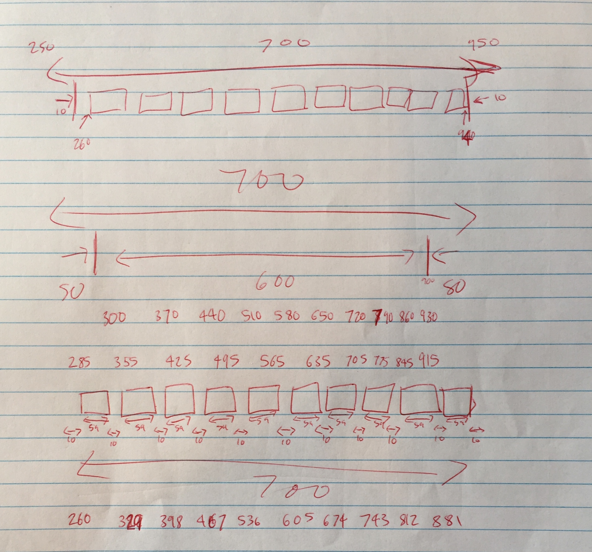
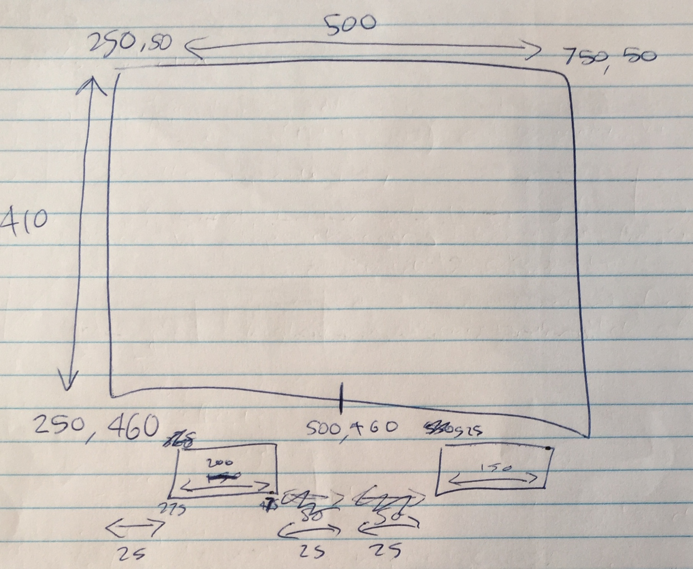

Sprint 1
Aim: Create a drawing canvas in which rectangles can be drawn. Rectangles should not be able to be drawn outside this drawing canvas.
Link to finished sprint: Sprint 1
Link to Trello Board: Trello Sprint 1

Next Step: Allow the user to draw different shapes on the drawing canvas.
Sprint 2
Aim: Allow the user to draw circles within the drawing canvas instead of rectangles.
Link to finished sprint: Sprint 2
Link to Trello Board: Trello Sprint 2
Next Step: Fix the error where the stroke of the dragging circle doesn’t show up by making circles inside a bounding rectangle.
Sprint 3
Aim: Allow the user to draw ellipses within the drawing canvas instead of rectangles.
Link to finished sprint: Sprint 3
Link to Trello Board: Trello Sprint 3
Next Step: Allow the user to draw exact squares.
Sprint 4
Aim: Allow the user to choose different shapes to draw with
Link to finished sprint: Sprint 4
Link to Trello Board: Trello Sprint 4

Sprint 5
Aim: Allow the user to choose different shapes and colours to draw with
Link to finished sprint: Sprint 5
Link to Trello Board: Trello Sprint 5

Sprint 6
Aim: Create more shapes for the user to draw with
Link to finished sprint: Sprint 6
Link to Trello Board: Trello Sprint 6
Sprint 7
Aim: Create a brush tool
Link to finished sprint: Sprint 7
Link to Trello Board: Trello Sprint 7

Sprint 8
Aim: Allow the user to change the background colour, undo the last thing they drew, clear the canvas, and erase what they have drawn
Link to finished sprint: Sprint 8
Link to Trello Board: Trello Sprint 8
Final Product
Aim: To clean up the code to create a polished and error-free finished program.
Link to finished product: Final Program
Link to Trello Board: Trello Sprint 9
Relevant Implications
Future proofing
I designed this program specifically so that it is easy to add new features and remove old ones. This is what happened throughout the whole process of building the program, as each of the versions was gradually updated with more and more new features being added, that eventually came together as a final cohesive drawing tool. This issue of future proofing has been addressed in the way the program has been designed. For example, the program elements, such as the buttons and shapes, have all been programmed as objects, which means that each element is a self contained modular piece of code that needs a defined set of parameters to work (i.e. mouse data and colour information) and can be put into or taken out of the system with ease. All of these objects are built in a similar way, with a standard structure, and must contain an update function, which means they are able to appear on the interface using the update call. Another way the program has been future proofed is the way that the management of most of the objects occurs in a central place, the control object file. The idea of all of this future proofing is that an experienced programmer could add or remove elements of the program with ease. This is also helped by precise and informative commenting throughout the code.
Functionality
Functionality is all about whether the program works well. My program is free of bugs and loads quickly, which is important for functionality. This has been addressed by creating the program in almost pure JavaScript, and having no graphics, which have both been done specifically so that the page loads very quickly. I tested this by using a live web server called GitHub to upload and store each version of my program, and observing loading performance of the files on this web server. Another way I made sure the program is functional is by systematically testing it. I tested user interactions such as the position of clicking and directions of dragging, and included careful checks around boundaries, which resulted in the use of the clip() function for the brush tool. The use of the Math.abs function was the result of failed tests for drawing circles, because these objects were being given negative radius values, so to make them work the absolute value of the radius had to be used. Most new components were tested prior to being added to the main program, and at various stages in sprints, console logging was used to analyse boundary test functions, and locate problems when bugs appeared.
Up until Sprint 7, the program worked on all browsers. The finished program doesn’t work on FireFox or Safari, due to the addition of the Offscreen Canvas which is used to improve the performance of the brush tool and allows each line drawn to be undone as a whole. However it still works on Google Chrome, and the Offscreen Canvas is an important addition for the brush tool.
Examples of trialling and making decisions
An example of trialling and making informed decisions based on those trials throughout this process is the two different ways a circle could be drawn on the screen. The first version (Sprint 2) was trialled and had many bugs that were not able to be fixed, so a new approach had to be taken, first making an ellipse object (Sprint 3), and then using that and the rectangle object to create a square object inside a rectangle boundary box and an ellipse inside the square to create a circle (Sprint 6) without the bugs of the previous version. Another example of this process can be found in the creation of the brush tool (Sprint 7). At first, it had performance issues, due to the large number of objects being instantiated every time a line was drawn. However, this was fixed with the addition of an Offscreen Canvas, which allowed for the canvas to be turned into an image bitmap before being pushed to the objectset array, which improved brush performance. This addition to the program also helped when it came to creating the undo button (Sprint 8) because it meant that each whole brush line could be undone in one click, instead of having to individually undo every single circle of which the brush was made up.
Effectively using information from testing and trialling to improve the functionality of the outcome
I effectively used information from testing and trialling to improve the functionality of the outcome by doing
detailed tests of the interface design to ensure the design functionality was maximised. I trialled colour themes,
and changed certain shades that were too similar to make them more defined.



I also changed the incrementation of the brush width buttons from +1px to +2px which lead to a wider variety of
brush widths being available. One more way the interface design was changed was by updating the original colour
buttons, which had the colour name displayed, to simple swatches, to allow more colour buttons to fit on the screen,
and make the colour palette more diverse. I also increased the size of the canvas to accommodate all the improvements
in design. After some user testing, I added the paint button, skin tone colour buttons, and greyscale colour buttons,
as this was what the users wanted from the program.
How did your working process leading to the development of a high quality digital outcome.
My work was centred around the Agile process. This is a development process which allowed the planning and development of this program to happen together. It called for repeated cycles of planning, developing, and then testing, called sprints. These sprints were very helpful because after a couple of times doing them I got a much clearer idea of what I could achieve and my aims became much more focused and realistic. The Agile process helped me to see the project in a highly simplified form at the start, and improve with every sprint. After every sprint, the end result was ‘potentially shippable product’ which was a product that had been created to the standards of that particular sprint and met the specifications of that sprint. It also helped that each sprint had been tested, so that no bugs were carried all the way through the different versions. The Agile process helped me with prioritising, as I would pick one thing to work on and stick at it until it was done, then move onto the next thing, instead of trying to do everything at once and ending up with a project backlog. It made me productive and, by breaking the project into parts, allowed me to quickly reach attainable goals to end up with an advanced program.